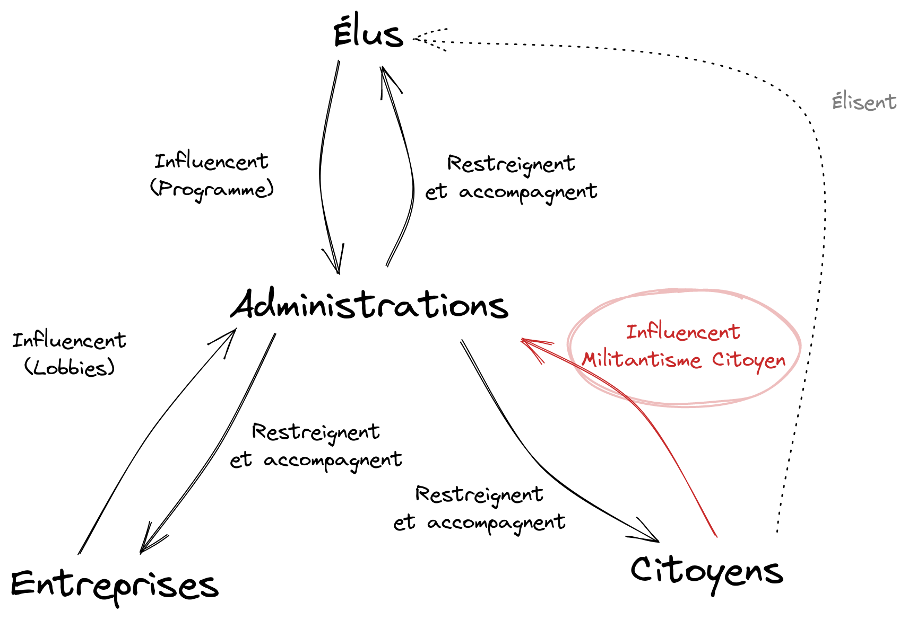

Citoyenneté Militante
Manifeste pour un Militantisme Administratif
Nous entront aujourd'hui dans une crise environnementale et sociale majeure. L'ampleur de celle-ci exige que nous engendrons des changements profonds, rapides et désormais radicaux de notre société sur l'ensemble de son organisation et cela sur la totalité des échelles, de nos communes aux instances internationales les plus hautes.
Pour parvenir à ces changements plus que nécessaires nous devons nous réarmer, nous citoyens, d'outils efficaces que nous pouvons utiliser le plus rapidement et le plus massivement possible afin d'influencer et de contraindre les représentants, quitte à directement se substituer à eux en prenant les devants.
Les militants luttant contre l'effondrement de la biodiversité, pour la limitation des causes engendrant la dérive climatique, ainsi que l'ensemble des militants des luttes sociales cherchent aujourd'hui des leviers permettant de réellement influencer et de contraindre, et cela de façon massive, les acteurs contre lesquels ils résistent.
Aujourd'hui, tout outil qui sera considéré comme efficace sera révolutionnaire.
Au sein de la diversité des leviers et moyens aujourd'hui mis en œuvres certains d'entre eux sont aujourd'hui sous-utilisés. C'est en ce sens que nous souhaitons mettre en avant l'un d'entre eux.
Le Militantisme Administratif
L'ampleur des changements que nous nous devons d'opérer afin d'atténuer au mieux les catastrophes actuelles et à venir nécessitent de diversifier au maximum les actions à entreprendre.
Au sein de cette diversité d'actions nous avons principalement visé jusqu'ici trois types d'acteurs:
- Nous avons tentés d'influencer et de dénoncer les politiques et leurs décisions destructrices.
- Nous avons tenté de manifester notre opposition et de résister face à des entreprises dont les actions sont
dévastatrices pour nos territoires, nos sociétés et nos communs.
- Nous avons finalement tenté de sensibiliser nos pairs, nos parents, nos amis, nos connaissances afin de les
mobiliser face aux conséquences de ces actions ravageuses.
Nous ciblons majoritairement ces trois acteurs car ce sont ceux avec lesquels nous interagissont le plus souvent et qui sont le plus visible. Ce sont d'ailleurs ces mêmes acteurs qui sont souvent à l'origine des décisions et politiques contre lesquelles nous résistons.
Mais nous constatons que la nature et l'ampleur des changements que nous souhaitons engendrer nécessitent de s'attaquer aux éléments structurants nos sociétés, bien au delà de ces acteurs habituels.
Les administrations constituent aujourd'hui l'élément central remplissant ce rôle "d'orchestre" des décisions des acteurs dont elle dépendent. Elles disposent de moyens propres, les prérogatives de puissance publique, qui lui permettent d'agir et de prendre des décisions auprès des usagers, entreprises ou autre acteurs sur lesquelles elles exercent leurs pouvoirs.
L'administration constitue le point d'insertion du politique dans le social
Eric Weil, Philosophie politique, Vrin, 1996
La volonté politique, même au travers des décisions des pouvoirs exécutifs n'a très souvent pas d'impact réel tant qu'elle n'est pas concrétisée par l'administration.

Nous pouvons par ailleurs noter que Le code des relations entre le public et l'administration distingue trois types d'administrations (voir vie-publique.fr):
- l’administration d’État dont les compétences s’étendent à tout le territoire ;
- l’administration territoriale dont les pouvoirs sont limités à la région, au département ou à la commune ;
- les établissements publics aux compétences spécialisées (universités, agences de l'eau, caisses de sécurité sociale, etc.).
Même si Militantisme Administratif tend à se concentrer sur les administrations territoriales, les méthodes peuvent s'adapter et s'appliquer de la même façon aux autres catégories.
Pourquoi cibler les administrations ?
Le pouvoir administratif
La séparation des pouvoirs théorisé par Lock et Montesquieu, qui distinguaient alors législatif, exécutif et judiciaire a été redéfinie de façon contemporaine par le politologue Gégard Bergeron qui présente alors quatres fonctions distinctes pour l'État: législative, juridictionnelle, gouvernementale et administrative.
Celui-ci fait alors une distinction entre le pouvoir gourvernemental et le pouvoir administratif, jusqu'alors considérés comme faisant partit de l'exécutif (celui qui "applique la lois"). Une confusion étant souvent faite selon lui entre ces deux éléments, bien souvent par le fait que ces deux pouvoirs sont fréquement partagés par des acteurs jouissant des deux rôles simultanéments (un maire à une fonction gouvernemantale en tant que chef du conseil municipal mais est également chef de l'administration municipale).
C'est la distinction entre le pouvoir gouvernemental (qu'il soit national ou local, à l'échelle d'une commune par exemple) et administratif qui concentre le cœur de l'action du Militant Administratif.
Contrairement aux élus et à leurs actions et volontés politiques, les administrations possèdent toutes des prérogatives très précises, codifiées et réglementées. C'est très souvent à ce niveau que les élus se heurtent lorsqu'ils souhaitent mettre en place leurs volontés politiques.
Là où les politiques sont dans l'incantatoire, l'administration s'occupera de confronter et transposer ces visions dans la réalité et les faits.
Tenter d'influencer ou de contraindre, de façon militante, le pouvoir gouvernemental est beaucoup plus difficile, car bien souvent se basant sur des promesses, engagements et idéologies politiques (autant soient elles réalistes et applicables) qui ne garantissent pas l'exécution ou la mise en application de celles-ci.
Inversement, la forme même de l'administration, leurs rôles et leurs actions nous offrent des garanties et des moyens d'actions et de recours très vastes.
Les particularités des administrations
- Neutralité et impartialité
L'administration agit dans l'intérêt général et respecte le principe de légalité. Elle est tenue à l'obligation de neutralité et au respect du principe de laïcité. Elle se conforme au principe d'égalité et garantit à chacun un traitement impartial.
Article L100-2 du Code des relations entre le public et les administrations.
Les décisions administratives se doivent d'être cohérentes et neutres. Du fait de leur neutralité, une différence de traitement entre deux décisions similaires pourra être notifiée et corrigée.
C'est un angle d'attaque assez courant qui permet de demander aisément une homogénéisation d'une décision vis à vis d'une autre.
Son obligation de neutralité permet également de remettre en question des décisions administratives ayant été plutôt poussées par une décision politique plus que par les réglementations et plans en vigueurs, auxquels cette même administration à obligation de se contraindre (il existe bien souvent une zone grise à ce niveau, que le citoyen militant peut explorer et légitimement interroger).
- Transparence et contestations
La société a le droit de demander compte
à tout agent public de son administration
Article 15 de la Déclaration des droits de l'homme et du citoyen
Les administrations se doivent d'être transparentes, tant dans leurs fonctionnements que pour expliciter la nature de leurs décisions. Là ici nous pouvons user de nombreux outils pour les forcer à expliciter leurs méthodologies et arguments ayant mené aux conclusions exprimées.
C'est un autre angle d'attaque très commun pouvant montrer les faiblesses, voir l'illégalité (si prouvé, notamment via la décision d'une Tribunal Adminisitratif) de certaines de ces décisions.
Il existe également des outils permettants de forcer les administrations dans des cas où elles seraient réticentes à faire leurs devoirs. La CADA (Commission d’Accès aux Documents Administratifs) peut, par exemple, être saisie afin de forcer une administration à vous délivrer certains documents.
- Pérennité et anticipation
L'une des grandes particularités de l'ensemble nos administration est la stabilité et la pérennité de celles-ci et de leurs actions dans le temps. Celles-ci résistent en effet aux lavages des mandatures successives en servant très souvent de garde fou ou d'atténateurs des décisions politiques. Nous pouvons notter toutefois qu'au fil des années ces politiques finissent tout de même par "déteindre" sur celles-ci.
Les réglementations évoluent lentement et s'appliquent dans un temps long, elles sont souvent accompagnés de mécanismes "à cliquets" empêchant certains retours en arrière suite à une décision particulière (la sanctuarisation d'une zone par exemple).
Cette particularité requiert un changement de temporalité de la part des militants. Le maître mot est ici « l'anticipation ». Les militants sont souvent habitués à s'impliquer très fortement sur des temps court, lorsqu'il y a urgence à agir. Ici il faudra donc apprendre à marrier les actions plus directes et rapide et les actions s'inscrivants sur le long terme. Il est toutefois intéressant de noter que les changements les plus ambitieux et contraignant sont ceux qui sont orchestrés le plus en amont.
- Diversité et complémentarité
Nous présentons souvent les administrations comme un "mille-feuille" complexe. Les multiples organes décisionnaires et leur hétérogénéités peuvent rendre le tout difficile d'accès. Néanmoins cette répartition des décisions et des rôles est aussi un atout important pour qui souhaite pousser certains projets ou visions auprès d'elles.
Par exemple; certaines compétences autrefois communales sont remontés au niveau des communautés de communes ("ComCom" pour les intimes) ou Métropoles. Derrière ces changement apparement purement technique nous pouvons plus facilement questionner et proposer des modifications à un organe tiers là où l'échange directe avec la commune aurait été plus compliqué (souvent pour des raisons de politiques locales).
C'est dans cette diversité de responsabilités qu'un Militant Adminisratif trouvera d'autres possibilités d'actions afin de renforcer et compléter ses demandes.
Le Militantisme Administratif,
une action en quatre
actes
Le Militant Administratif agit en quatre étapes:
-
La Préparation Il s'informe, se rapproche, analyse et comprend comment les administrations qui
possèdent les compétences
sur les sujets sur lesquels il milite fonctionnent.
Il comprend les compétences et responsabilités liées à ces administrations (pour casser les boucles de
renvois de responsabilités) et le cadre dans lesquelles elles agissent.
"Il s'agit d'une simple
formalité administrative"
Les 12 travaux d'Astérix, René
Goscinny et Albert Uderzo (1978)
Il repère les documents centraux avec lesquelles ces administrations agissent et cherche des cas
particulier qui pourrait l'intéresser. Pour restreindre les recherches il est fortement recommandé de
chercher plutôt des documents qui ont une porté locale (Plan Local d'Urbanisme, arrêts
municipaux…).
-
La Prise de Contact Il repère les manquements, les "erreurs", les retards entre les textes, les
plans et les réglementations en vigueur et s'informe sur le calendrier d'évolution de ces éléments (ne
pas hésiter à contacter
directement les administrations pour en savoir plus, toutes les dates ne sont pas publiques), notamment
lors de transpositions de
textes, ainsi que sur les moyens de contribuer ou influencer ceux-ci.
Les prises de contact peuvent être individuelles ou collectives, attention toutefois de ne pas "faire
peur" à cette étape en venant directement avec un collectif. Parfois une simple solicitation
individuelle peut être plus efficace (jouer l'agneau innocent).
Il s'informera sur le fond, mais aussi sur la forme. La reconstution d'un organigrame et des relations entre les différents membres ainsi que leurs rôles respectifs par exemple peut être un très bon outil pour commencer à explorer le terrain. Au
téléphone il pourra par exemple "tenir la jambe" pour essayer de connaitre les histoires de couloir
(afin de savoir pourquoi certaines demandes prennent plus de temps, "qu'est ce qui bloque l'avancée de
ma demande ?"…).
 It's Always Sunny In Philadelphia (2008)
It's Always Sunny In Philadelphia (2008)
-
La Demande Grâce aux informations récupérées il propose alors des "corrections" et ajustements
(les guillemets ne sont pas anodins, certaines erreurs sont plus
suggestives que d'autres) en s'appuyant sur les réglementations en vigueur et en utilisant tout moyen de
pression à sa disposition pour s'assurer de l'intégration de ces changements aussi rapidement que
possible au sein de ces documents.
Toute demande se doit d'être la plus précise, documentée, neutre et désintéressée afin de
s'assurer qu'elles soient prise en compte rapidement et qu'un minimum d'aller retours soient fait entre
les services. N'hésitez pas à éviter les boucles de renvois ("J'ai déjà pris contact avec vos collègues
et ils m'ont dit de m'addresser directement à vous"…).
Ne pas hésiter à paralléliser les demandes, à différent niveaux. Tester certaines demandes qui sortent
un peu du cadre si vous avez des doutes.
"On sait jamais, sur un malentendu, ca peut
marcher."
Les Bronzés font du ski , Patrice Leconte (1979)
-
Le Suivit Il fera le suivit de sa ou ses demandes via des relances, en surveillant le calendrier
(date de rendu de décisions, votes…).
Si il n'y a pas de réponse claire (négative ou positive) il continuera à relancer, tout en trouvant un
bon équilibre, des relances trop rapprochées peuvent avoir l'effet inverse qu'escompté.
Dans certain cas les demandes peuvent alors être escaladés, en copie à d'autres administrations ou via
une demande aux instances de contrôles (CADA), voir via la constitution d'un dossier et d'une attaque
devant un tribunal (si la demande est pleinement légitime, formulée et qu'il y a réellement une volonté
d'aller "jusqu'au boût").
Cette méthodologie en apparence simple nécessite un bon suivit des demandes faites au cours du temps. Au vu de
l'étendue des connaissances nécessaires sur les différents éléments il est également fort probable que certains
militants se spécialisent dans des domaines particulier afin d'être plus efficaces et informés sur les sujets à
traiter. Ils peuvent alors plus facilement résumer leurs domaines et compléter leurs actions vis à vis d'autre
militants ayant eux même fait l'effort de vulgarisation nécessaire.
Comme expliqué précédement, le Militant Administratif doit également faire un travail d'anticipation sur les éléments sur lesquels
il travaille. Certains règlements ou plans pouvant mettre des mois voir des années à être modifiés ou corrigés.
L'idée centrale étant de protéger ou contraindre les acteurs visés par ces documents bien en amont de leurs
actions (en demandant le classement ou la protection d'une zone dans un Plan Local d'Urbanisme, ou alors
d'éléments au sein de cette zone alors même qu'aucune pression ou projet n'est prévue dessus par exemple).
Toute avancée faite le plus en amont sera tout autant de combats ou investissements militants économisés plus tard.
Les administrations ne sont ni strictes, ni irréprochables. C'est cette vision qui anime le cœur même de
la réflexion qui gravite autour du concept de Militantisme Administratif. Vous découvrirez que beaucoup de
décisions qui vous semblent, au premier abord, sérieuses et justifiées sont prises au final sans fondements
réels ou alors avec des justifications plus qu'hasardeuses ou teintées d'une idéologie.
C'est dans ces cas là que vous pourrez alors les questionner pour essayer de comprendre ces décisions et trouver
un moyen de les modifier suivant ce qui vous semble le plus en accords avec vos convictions profondes.
Le Citoyen Militant prendra alors au cours de ses actions successives le rôle de lanceur d'alerte, de
lobbyiste ou simplement d'observateurs et de vulgarisateur des changements en cours et à venir sur les
domaines sur lesquels il milite.
Nous donner les moyens d'atteindre des objectifs décisifs mais aujourd'hui délaissée
Alors pourquoi ce manifeste ? Le Militantisme Administratif est une pratique militante encore trop discrète et largement sous estimée mais au final très efficace et qui mérite d'être mieux comprise partagée et amplifiée. Depuis toujours ce militantisme administratif a existé de façon parfois isolée et souvent pas assez reconnue.
Le Militantisme Administratif à la particularité d'être l'un des seuls outils permettant d'écrire activement l'avenir et pas seulement de le défendre face aux menaces toujours plus grandes et nombreuses. Anticiper et sauvegarder des espaces, protéger et sanctuariser c'est épargner notre énergie militante future pour mieux les dépenser quand nous en auront vraiment besoin.
Les entreprises et nos dirigeants écrivent notre avenir par leurs technologies, leurs visions et leurs lobbies. Le Militantisme Adminisitratif est sûrement la meilleurs façon de s'assurer d'écrire activement le nôtre !
Jaussoin Timothée - Élu à Gières et Militant Écologiste